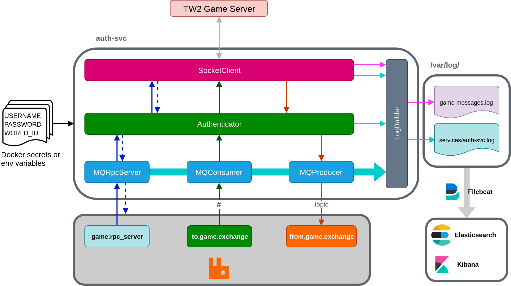
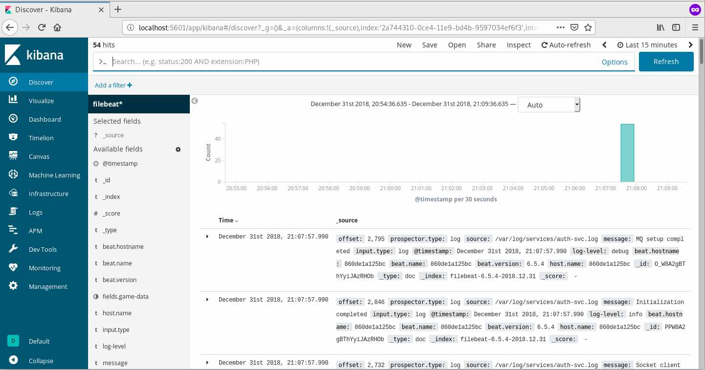
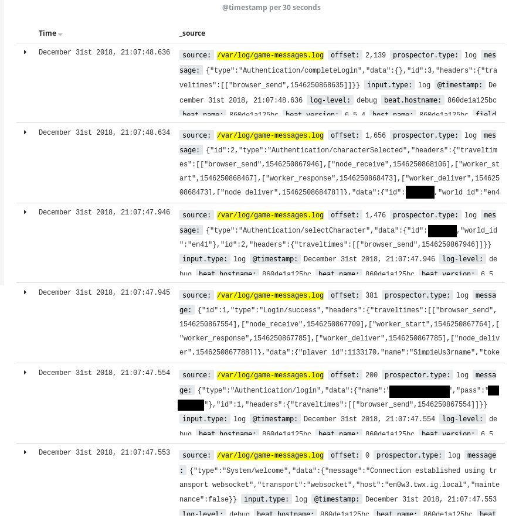
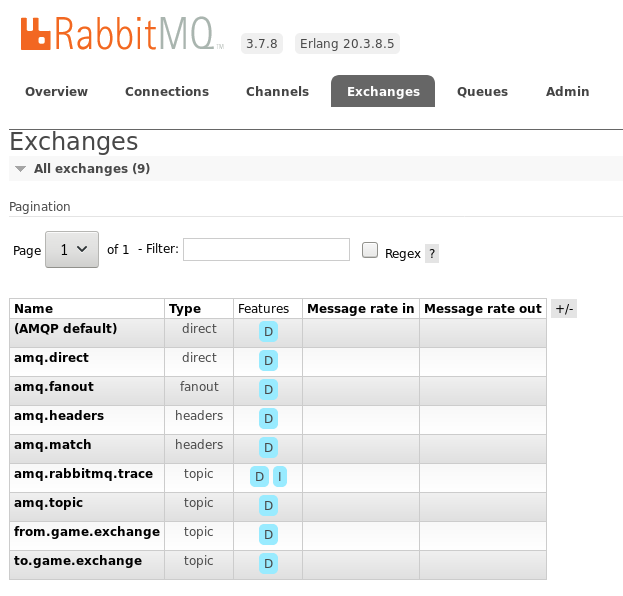
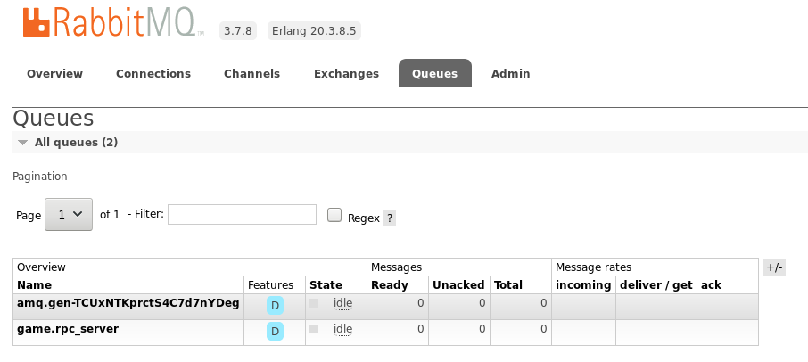

Tribal Wars 2 Manager - Authentication Service
In the previous post, I mentioned the 6 services essential to wrap up the Tribal Wars 2 manager: data collection, alert, farm, ops and build-recruit services. Before that to happen however, we need to figure out a way to talk to the game i.e. the authentication service.
Core service overview

The source code for this service is hosted at https://bitbucket.org/cn-d/auth-service.
The authentication service is sandwiched between the 6 services and the game server. Its purpose is to manage authentication and the message flows to and from the game. At its core, the service has 6 components: socket client, authenticator, log builder and 3 MQ (message queue) components. Each of these components are developed as singletons to:
- Limit the number of queues and exchanges created on RabbitMQ for MQ components.
- Limit access points to disk (logs) and game server in case an object is called twice during initialization.
The following sections describes each component in more detail with links to the source code. Please note that the source can change in the future and you should always have a look for the code in the master branch.
Socket Client
SocketClient (src) is a singleton class, responsible for managing a connection to the game server and handles messages in-and-out of the game to the Authenticator component. To use this class, request for an instance by calling SocketClient.shared.
This class has 2 message handling features: fire-and-forget messaging to the game with fire(message: ISocketMessage), and asynchronous request/reply messaging with request(message: ISocketMessage, reply: (replyMsg: ISocketMessage) => void) and reply(message: ISocketMessage).
To ensure that messages are matched to the request, the game employs an id field. For example, when a request is sent with
{
"type": "Authentication/login",
"id": 2,
//... other data
}
The game would respond with either of the following:
// Valid credentials
{
"type": "Login/success",
"id": 2,
//... other data
}
// Invalid credentials
{
"type": "System/error" // or something else, I can't remember
"id": 2,
//... other data
}
Either way, there’s a match of id of 2 in the response field. Internally, SocketClient uses a private _msgId field and an array _replyQueue to keep track of requested IDs to match for responses when they come in.
SocketClient extends node’s EventEmitter class. A list of events can be found in SocketClientEvent enum.
Authenticator
Authenticator is a singleton class, responsible for managing the client sessions and connections to both the game via SocketClient and RabbitMQ via the 3 MQ components. To use this class, request for an instance with Authenticator.shared.
Tribal Wars 2 login message requires a username field of name in the message but does not specify how the password is passed in. This is done either with a pass field with raw password text or token, a generated hash which I have no idea how they get it. In this application, I opted with using pass.
The authenticator starts and ensures the player is authenticated with the game using SocketClient before starting MQ components to ensure that the queued messages will not be processed before the game is connected.
The sequence of data to be sent and received for authenticating a player is shown in the Kibana logs for game-messages.log in the Results section.
MQ components
The auth-svc has 3 MQ classes as singleton-classes. Each of these are responsible for a different category of messaging to-and-from the game.
Messages sent to and from the game can be divided into 3 categories: request for information (villages on the map, player data), notification from the game (incomings, building/recruit task is completed) and changing a configuration (enable notifications). Due to this nature, the authentication service includes 3 MQ components as mentioned. This is similar to how the game’s socket service works behind the scene.
MQProducer and MQConsumer are topic exchanges. When receiving a message through MQProducer.send(message: ISocketMessage) (not a static method), the topic key is created by replacing / with . and send to from.game.exchange to be distributed to interested services. The socket message is sent as a whole. MQConsumer is a queue listening to the to.game.exchange. It listens to everything # and forwards the messages to Authenticator for processing. Currently, the Authenticator class does not attempt to verify the messages.
MQRpcServer implements the RPC pattern. It listens to game.rpc_server queue and sends messages to Authenticator by emitting an event. Aside from the game message, MQRpcServer also passes along the MQ message to be stored in Authenticator to async callback can be achieved.
Log Builder
The service includes 2 log files stored at /var/log/ in a Node container: game-messages.log and services/auth-svc.log. These are created and written to by the LogBuilder built with WinstonJS. Type and direction of data flows are separated by colours in the diagram above.
FileBeat is configured to monitor /var/log/game-messages.log and /var/log/services/*.logfor log files. New log files from other services will be placed in /var/log/services/. This is accomplished by sharing a volume between multiple services.
Secrets
Throughout the development cycle, I have been using environment variables to load in the player’s username, password and world ID. For deployment, these will be replaced with Docker secrets in Docker Swarm.
Changes to technology choices
From developing this service, I am going to change the deployment technology to Docker Swarm and proxy tool to Traefik.
Kubernetes has a lot of baggage. You don’t just use Kubernetes, you use all the tools that makes it better like Helm and Istio. There’s a whole new set of commands and languages you gotta master. Docker Swarm’s learning curve is less steep. Once you knew Docker CLI, getting the hang of Swarm is easier. Orchestration is a big topic, but the tools shouldn’t make it harder.
Next up is Traefik. After using it to configure this blog thanks to Ghost, I don’t think that it’s the right fit for microservices. For new services and end-points, NGINX needs you to edit and confgure a conf file. These files need to be curated and version-controlled. Traefik’s way of configuration by enabling a flag in the docker-compose file is a god-send. The Traefik guys have got to do more marketing to compete.
Putting in the Elastic Stack
This section is more of a rant. If you want to have a look at the code that makes up the stack for this project, head over to https://bitbucket.org/cn-d/elastic-stack.
In this project, I wanted to setup Elasticsearch, Kibana and Beats on Docker containers. Elastic Co has a reference Elastic stack Docker repository.
The repository sets the default password, create keystores to store passwords and install dashboards, index patterns for beats and apm. That’s great and all but the free Elastic stack doesn’t have authentication built-in. No security ticks in the Free tier. The LICENSE (Apache 2.0) is no help either. Is this a trial? Yes it is. That was a lot of clicks to find out what’s the T&Cs huh.
I don’t want my centralised logging service to stop working after 30 days, plus I have mixed feelings about the security feature for this project. Every services are going to be run on the player’s machine. Adding security and secrets increase the complexity for development, so at worst when the players want to have some authentication, they could have the services sit behind a proxy like NGINX or Apache and put in authentication. The repository was definitely helpful however, I find their setup-beat.sh helpful in configuring and setting up Elasticsearch and Filebeat.
Spinning up Elasticsearch, Kibana and Filebeat on their own containers was simple enough. For this first step, I chose not to use Logstash and instead use Elasticsearch’s ingest nodes to talk to Filebeat. I ran into a wall when trying to configure Elasticsearch’s pipelines however.
Firstly, Compose’s depends_on and links controls the start-up order of services, not checking and polling the dependencies’ health before starting the service of interest. In my case, I wanted to run a shell script to POST custom pipelines into Elasticsearch once it’s healthy. In my case, I went with creating a separate container with a script that keeps waiting until Elasticsearch is ready, similar to how setup-beat.sh works.
Secondly, Elastic’s documentation is not noob-friendly. Run the Filebeat setup section in Filebeat on Docker documentation includes the setup command which is not explained. Further down the page where the volume-mounted configuration code was shown, setup was removed.
What was it for?
The setup command is used to set up the initial environment, including index template, Kibana dashboard (when available) and machine learning (when available). This statement makes it seem all well and good to run setup. This command however, caused my Filebeat container to crash and exit with status code 1, claiming that Machine Learning is not available even when I turn off ML in Elasticsearch’s configuration. Leaving out the command in the Docker compose file starts Filebeat and all is well.
Lastly, Elasticsearch skips log lines when there are more than one pipeline processor. For my game-messages.log, each line contains date, log level and the message received from or sent to the game. It looks a bit like this:
2018-12-01T13:06:35.120Z info: {"type":"System/welcome","data":{"message":"Connection established using transport websocket","transport":"websocket","host":"en0w3.twx.ig.local","maintenance":false}}
By chaining a Grok processor and a JSON processor, I hope to have the final result in Elasticsearch looking a bit like
{
"@timestamp": <date>,
"message.type": "System/welcome",
"message.data": <data value in JSON block above in JSON format>
}
It worked on the first message received but decides to not process random messages down the line. I could have tried writing a Grok expression to split out the JSON string above but the order of type, data, id, etc. could change for each message. As it is not a high-priority task right now, I plan to look into this further down the line to improve game messages logging.
Results
The source code
For this project, I am using Bitbucket to share the source code as it allows me to have private repositories for in-development services. The source code for the authentication service and ready-for-public projects can be found at https://bitbucket.org/account/user/cn-d/projects/TW2MAN.
Inside, there are currently 3 folders: auth-service, compose and elastic-stack. To build and run the services described in this post, you need to be run a Unix-based machine. This is due to a dependency in es-init (service used to configure Elasticsearch once it’s healthy) which I have yet to iron out. Clone all 3 repositories and put them into the same folder. Once that’s completed, follow the steps below:
- Install Typescript if not installed.
- Head into auth-service folder and run tsc -w to build the source code. This puts the code into the dist folder for Docker to pick up during the Docker build process.
- Navigate into compose folder and run docker-compose -f compose-elastic-stack.yml -f compose-auth-svc.yml up -d –build. This command builds and sets up the services.
- After a bit of time, navigate to localhost:5601 for the Kibana’s dashboard. You can run watch docker ps to view the service statuses as they come up.
- Choose to Explore on your own.
- Head to Management and create an index pattern of filebeat* and select the time filter field name to be @timestamp.
- Head back to Discover and you should see a screen similar to below.
The screens
Kibana up and running

Add a filter on the top left under the search bar to limit the source to /var/log/game-messages.log shows you the authentication sequence.

I think I have those credentials in version control though… I make them just for this project so all is well 😊. Change the username, password and world ID for your own need.
If you want to have a look at RabbitMQ, the management dashboard is located at localhost:15672 with the default guest/guest credentials. In Exchanges tab, you should see from.game.exchange and to.game.exchange. In the Queues tab, game.rpc_server like the following images.


That’s it! All is configured and we are ready to proceed.
What’s next?
I’d like to setup a CI server with Jenkins Evergreen to build, bring up and down Docker compose services, configure BlueOcean for an easy-to-use visual method for players to deploy a Docker stack for the final release.
Alongside that, I’ll be learning Ruby and collaborating with one of my mates to work on the data collection service and make a pretty Kibana Canvas to view the game data.
I hope you guys have had a good read and Happy New Year!